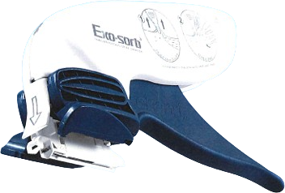
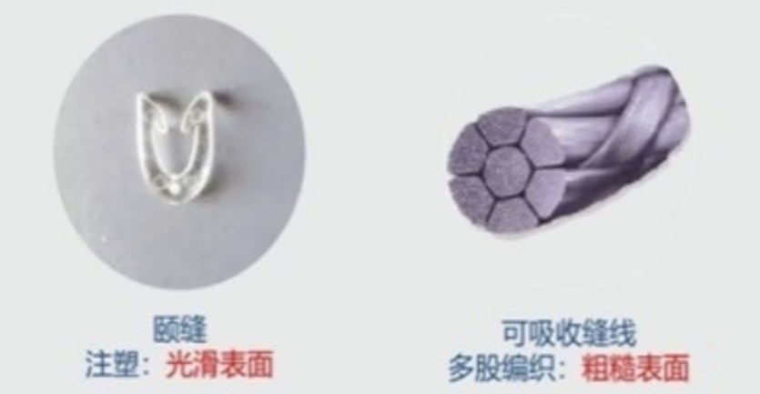
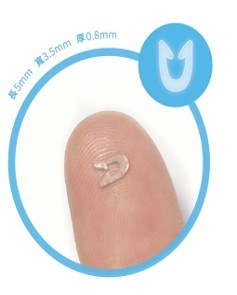

一次性可吸收釘
皮內吻合器
材質說明
聚乳酸-乙醇酸共聚物，通常稱為 PLGA，是一種生物可降解的高分子材料，由乳酸與乙醇酸兩種單體組成。具備良好的生物相容性與可控的降解速率，於醫療領域應用廣泛，如醫用縫合線。
關於 CAS 編號
在材料科學領域，CAS 通常指 CAS Registry Number。編號目的是為了方便資料庫檢索，並避免化學物質名稱多樣性所帶來的混淆。
| 項目 | Vicryl 可吸收縫線 | 一次性可吸收皮內吻合釘 |
|---|---|---|
| 材料名稱 | 聚乳酸-乙醇酸共聚物 (PLGA) | 聚乳酸-乙醇酸共聚物 (PLGA) |
| 組成 | 90% 乳酸、10% 乙醇酸 | 40% 乳酸、60% 乙醇酸 |
| 分子式 | (C₆H₈O₄)m (C₄H₄O₄)n | (C₆H₈O₄)m (C₄H₄O₄)n |
| CAS | 26780-50-7 | 26780-50-7 |
可吸收皮內吻合釘 vs 可吸收縫線

1 · 降低感染
可吸收縫線為多股編織，表面積大且粗糙，容易附著細菌，導致感染風險；縫線於真皮層縫合亦容易造成組織「切割」，可能導致紅斑與炎症增加。可吸收釘表面光滑，可避免上述縫線的弊端。

2 · 異物感刺激小
光滑表面設計大幅降低組織異物感，減少術後不適，提升病患恢復期間的整體舒適度。
3 · 可縫合長度
可以縫合約 21cm 傷口，吻合器內含 30 根皮內釘，足以應對多數臨床縫合情境。
操作原理
透過吻合器將可吸收釘精準植入真皮層，取代傳統縫線的貫穿式縫合，完整示範吻合器的作用機制。
示範影片 · 操作原理標準操作
依循標準作業流程逐一植入皮內釘，維持等距、對稱，確保傷口張力均勻分佈。
示範影片 · 標準操作臨床實例
實際手術現場應用案例，呈現皮內吻合釘於真實傷口縫合中的操作情形與術後外觀。
示範影片 · 臨床實例較長傷口縫合
針對較長傷口的分段植入策略，維持縫合線張力一致，兼顧效率與美觀。
示範影片 · 較長傷口縫合禁忌症
以下情況不適用：
縫合中對組織過度拉伸的情況
皮膚組織過薄或過厚
需要 X 線輻射不穿透 的情形（如可吸收釘用於定位診斷時，不適合使用）
真皮以外的其他組織
縫合不平坦區域
不能用於三級感染切口
不能在疤痕組織上使用
主要原因為疤痕組織中的膠原纖維，功能質量通常較為低劣；剔除疤痕後，可使用。
500 例剖腹產臨床研究
本研究旨在評估剖腹產手術中使用可吸收皮內吻合器（Subcuticular Absorbable Staples）的有效性、傷口癒合情況、併發症發生率及患者滿意度。
500 例中僅 6 例
併發症少
- 傷口裂開0例
- 血清腫0例
- 血腫1例
患者認為傷口閉合過程舒適且外觀美觀，整體滿意度高。
技術優勢與討論
500 Consecutive Cesarean Deliveries Closed With Subcuticular Absorbable Staples
低發炎反應
吻合釘由聚乳酸共聚物組成，在臨床研究中顯示其引發的炎症反應極低，有助於減少傷口滲出液。
改善舒適度
吻合釘完全植入於真皮層內，不會穿透皮膚表面，消除了傳統經皮縫合帶來的不適感。
保護組織
該技術能在不勒傷或壓迫組織的情況下精確固定真皮，且其間斷式放置有利於術後引流，並避免感染沿連續縫線擴散。
可吸收皮內吻合器在剖腹產中提供了一種高效、安全且具有優異美容效果的閉合方式，能顯著降低傷口併發症並提升患者的臨床體驗。
總結
- 縫合速度快、縮短手術時間
- 感染率低、顯著減少瘢痕形成
- 提升術後傷口美觀度
- 無需拆線，無外露縫線
- 疼痛感降低，恢復日常活動更快
- 傷口美觀，病人滿意度提升
- 縮短手術時間與減少併發症
- 進而降低綜合醫療成本